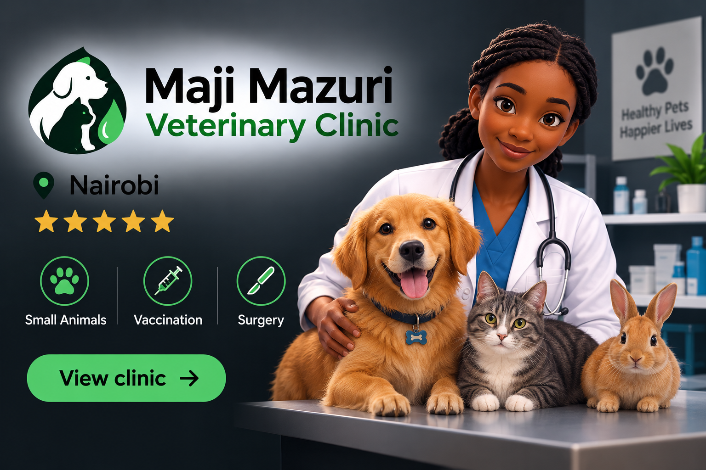

- Dogs
- Cats
- cattle
- sheep
- pigs
- poultry
- horses
Find a Trusted Veterinary care near you
Our Vet connect company contains a collection of Approved Veterinary clinics around Nairobi,Kiambu,Murang`a and Nyeri County.
All of these Veterinary clinics have registered and presented
verified documents on their establishment.
Our
inspections team has also visited the veterinary clinics in-person.
Discover veterinary clinics and animal healthcare providers for pets and livestock across Kenya
- General consultation
- Vaccination
- Surgery
- Emergency care
- Livestock health
- Disease diagnosis
- Deworming
- Animal nutrition
Maji Mazuri Veterinary Clinic

Nairobi
five star
Small Animals . Vaccination . Surgery
View clinicWema Veterinary Clinic
Kiambu
five star
Emergency care . Vaccination . Disease diagnostics
View clinicHow it works
- Search
- Compare
- Contact
Find veterinary clinics based on animal type,services,or location.
Explore clinic information and available services.
Use the clinic`s contact information to get in touch.